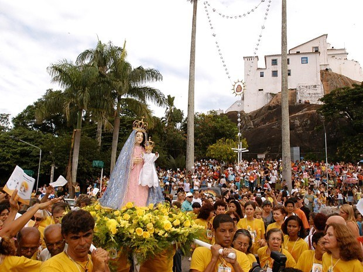
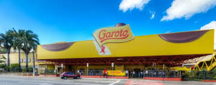

Festa da Penha
É a maior celebração religiosa do Espírito Santo, a terceira maior festa Mariana do Brasil.
De acordo com o guardião do Convento da Penha, Frei Valdecir Schwambach, as festividades em homenagem à santa padroeira do Espírito Santo começaram ainda em 1571.
A Romaria dos Homens foi introduzida na Festa da Penha em 1955, sendo a mais tradicional e mais longa reunindo pelo menos 700 mil romeiros.
As cores predominantes de Nossa Senhora são as mesmas da bandeira do Espírito Santo:
Rosa (veste de Nossa Senhora), Azul (manto) e Branca (veste do Menino Jesus)
Praias
As praias inesquecíveis são o grande destaque do Espírito Santo.
O clima tropical convida a todos a observar as belezas naturais e a saborear a típica moqueca e a torta capixaba.
A Região Metropolitana abriga praias como Guarapari, Curva da Jurema, Camburi, Praia da Costa, Itapoã, Coqueiral de Itaparica, Jacaraípe e Manguinhos.
Ao Sul, destacam-se as praias de Piúma, Anchieta, Marataízes e Itapemirim.
Ao Norte, as praias de Regência, Barra do Sahy, Pontal do Ipiranga, Coqueiral, Praia dos Padres, Guriri, Itaúnas e Riacho Doce, são algumas das mais procuradas.

Chocolates Garoto
A Chocolates Garoto, localizada em Vila Velha (ES), é uma das 10 maiores fábricas de chocolates do mundo.
A empresa conta hoje com um portfólio de aproximadamente 70 produtos.
Dentre os produtos que fabrica estão caixas de bombons, Tabletes, Ovos de Páscoa, e chocolate para uso culinário como coberturas e pó solúvel, que podem ser encontrados em mais de 50 países.
Seus maiores sucessos são a Caixa Amarela e os Tabletes Familiares com a marca Garoto; os chocolates Baton e Talento e o bombom Serenata de Amor.
Para os curiosos de plantão, a fábrica é aberta ao público para visitação.
Agende no site!